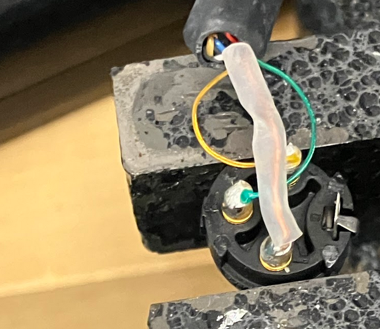
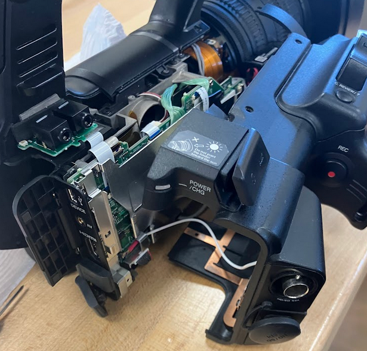

Work / Interests
I do a lot of Audio/Visual planning, setup and strike for events, as well as soldering and equipment repair. My most commonly soldered thing is XLR Cables (pictured left), but most excitingly, I've repaired a JVC GY-HM 650U camera (pictured below). Aside from soldering, my main areas of expertise include camera positioning, microphone positioning, crew-making, and setting everything up while keeping it looking clean and out of the way.

